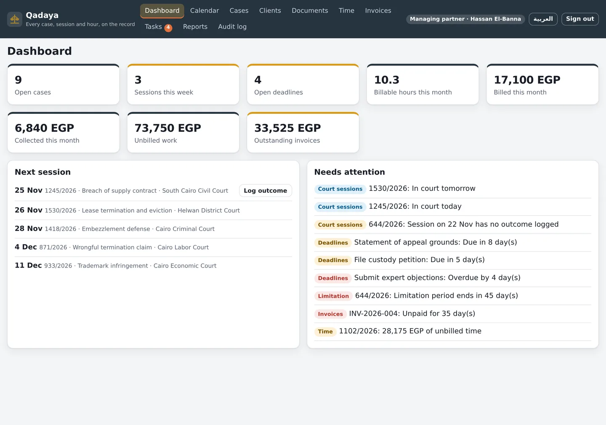
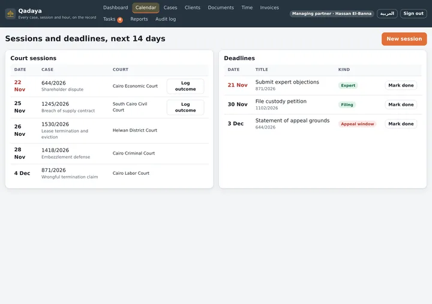
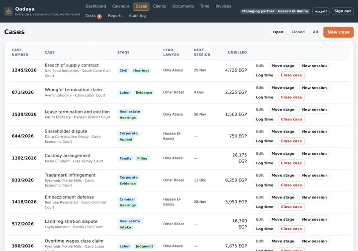
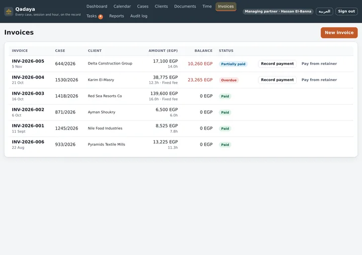
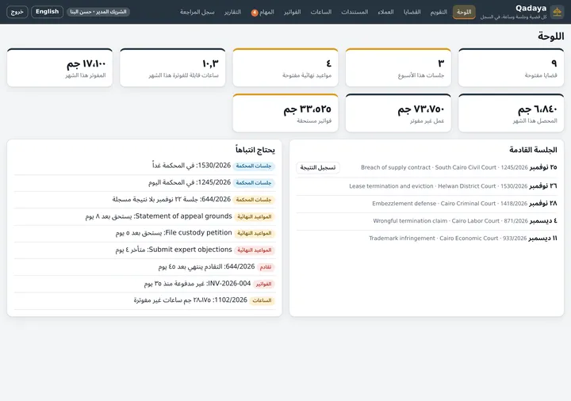
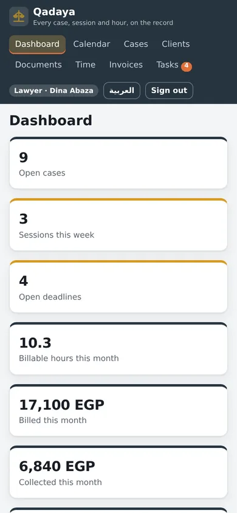

PORTFOLIO DEMO / BUILT / LIVE DEMO
Qadaya
Every case, session and hour, on the record. Law firm management the way a small practice actually runs it.

ACTUAL BUILDQadaya · Managing partner dashboard. Fictional firm, clients and cases.
The problem
A small law firm runs on a spreadsheet of cases, a paper court diary and the senior partner's memory. Nobody can say which sessions happened this week without calling the lawyer, a judgment's appeal window lives on a sticky note, the hours behind a fee are reconstructed from notebooks when the client asks, and the client himself calls the office to ask what happened at his own session.
What was built
A case management system for one firm with five roles. Clients sit in a register; each case is opened for a client with a lead lawyer, a court and a fee arrangement, hourly or fixed, and moves through its stages from intake to appeal, forward only. Court sessions are booked per case, and an outcome can only be recorded once the session date has passed. Lawyers log time in minutes against a case, and every entry keeps the lawyer's rate at that moment, so last year's work bills at last year's rate. An invoice is built from the unbilled time on a case, plus the one-time fixed fee the first time the case is invoiced; issuing it marks the time as billed, a payment can never exceed the balance, and an issued invoice can be settled from the client's retainer only while the retainer covers it. A case cannot be closed while it still has upcoming sessions, open tasks, open deadlines or unbilled time. Deadlines include the limitation date, and the dashboard warns the partner when a limitation period or an appeal window is near or past. The partner and the accountant see money; the paralegal never sees an invoice; the client signs in to a read-only portal with his own cases, documents and invoices, and nothing about any other client, removed from the response on the server, not hidden on screen. The interface works in Arabic (right to left) and English, and on a phone.
What changes for the firm
Before. Monday's court list is in three diaries. The appeal window on a judgment is discovered on day 29 of 30. The fee note for a year of work is assembled from memory, and the client hears about his session when he phones to ask.
After. The dashboard names today's sessions, the one from three days ago still missing an outcome, and the appeal window with eight days left. The invoice is built from the hours already recorded, at the rates already agreed, and a case with unbilled time cannot be closed by accident. The client reads his own file instead of calling.
Why it matters to a lawyer
A small firm's risk sits in dates and its income sits in hours. When the limitation reminder, the session calendar and the billable record come from the same case file the lawyers actually update, nothing depends on one person's memory, and the invoice is a report of work done, not a negotiation. These are designed situations, not measured results from a real firm.
The approach
No framework and no build step: plain JavaScript pages, one serverless API function and one logic file that holds every rule (stage order, session outcomes, rate snapshots, the invoice lifecycle, retainer draws, close-case guards, per-role views, the deterministic sample firm). The same file runs in the API, the browser and the test suites. Permissions are enforced on the server on every operation, create operations carry idempotency keys so a retried request never books a session or a payment twice, and every action lands in an audit log the partner alone can read. What a role must not see is removed from the response on the server, not hidden on screen.
The result
A live demo anyone can open. Sign in as the managing partner (PIN 1111), a lawyer (2222), the paralegal (3333), the accountant (4444) or a client (5555); the PINs are on the sign-in screen. The sample firm has 8 clients, 10 cases across six practice areas from intake to a closed file, a year of sessions, twelve months of time entries at three lawyer rates, 6 invoices (one overdue, one partially paid), 2 client retainers, 4 deadlines and 6 open tasks. Verification: 19 unit tests and 133 browser and API checks run to completion against the live site, covering forged tokens, malformed and oversized bodies, every role's permission lane with the client refused every write, the complete case lifecycle from intake to a paid invoice and a closed file, the close-case guards, idempotency keys, the client never seeing another client or a rate even on typed routes, hostile text shown as plain text, Arabic RTL and phone layouts.
Evidence & production limits
One shared demo firm: everyone sees and changes the same data. State is kept in server memory only, so it resets about every six hours and whenever the server instance restarts. Sign-in is a PIN printed on the sign-in screen, so it must not hold real client data. The firm, clients and cases are fictional.
Known gaps: no database, no real authentication, no court e-filing integration, no online payments, documents are a register without file storage, and no multi-firm tenancy. Some server error messages stay in English on the Arabic screens. Direction, scope and delivery: Nada Gamal.
Next chapter
A real database with per-firm tenancy, document file storage, court e-filing and hearing-date feeds, online payment of invoices, and client messaging on session outcomes would be the next implementation steps.
Inside the build
Open any preview to see the full capture. Captures show demonstration content, not evidence of client use.




